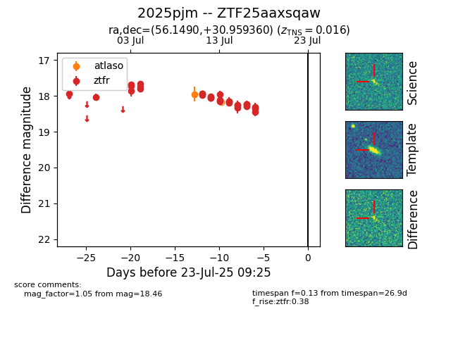

Target ZTF25aaxsqaw at 2025-07-23 11:48, see:
FINK: fink-portal.org/ZTF25aaxsqaw
Lasair: lasair-ztf.lsst.ac.uk/objects/ZTF25aaxsqaw
ALeRCE: alerce.online/object/ZTF25aaxsqaw
TNS: wis-tns.org/object/2025pjm
YSE: ziggy.ucolick.org/yse/transient_detail/2025pjm
alt names
ZTF25aaxsqaw (ztf,fink)
2025pjm (tns,yse)
coordinates:
equatorial (ra, dec) = (56.1490,+30.95936)
galactic (l, b) = (161.3097,-18.72073)
photometry
last atlaso=17.95, ztfr=18.46
1 atlaso, 30 ztfr detections
